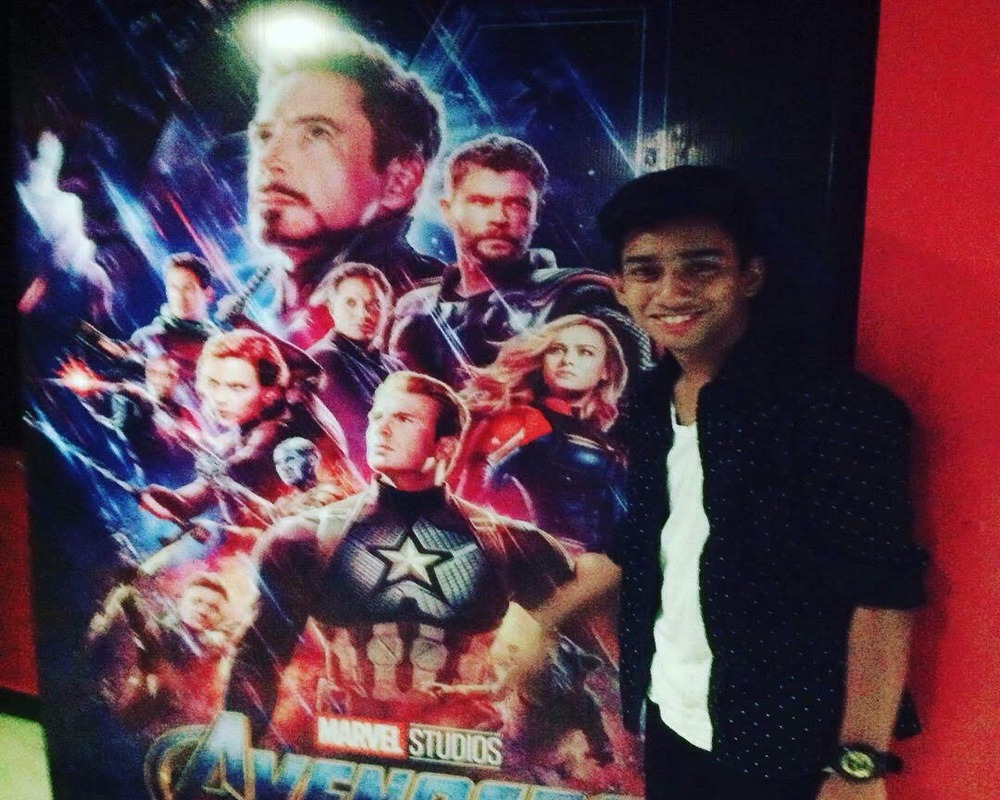

About Our Website
We have developed a web-based application that helps farmers to select crops that are compatible with their current crops and soil conditions. The application takes into account a variety of factors, including the type of crop, the soil type, and the climate. It then recommends a crop rotation pattern that will help to maintain soil fertility and productivity. Overall, creating a webpage that recommends crops based on crop rotation and topography requires a combination of agricultural expertise, data analysis, and web design skills.
About Us
ABHIJEET KUMAR
